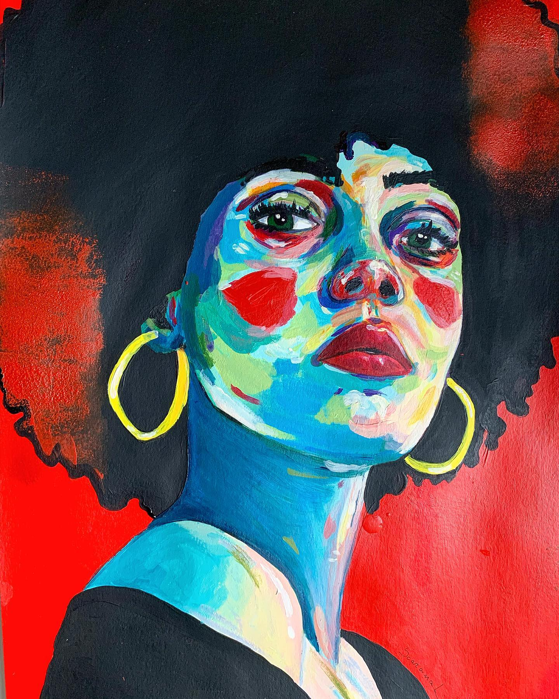

Scaramal Art
Events

Exhibition in Biella
Volti, storie, emozioni: la mostra Ritratti Urbani unisce arte e fotografia in
un percorso intimo e profondo. Beatrice
Scaramal espone 11 ritratti in acrilico, accompagnati da racconti personali che
esplorano la diversità umana e
trasformano gli stereotipi in storie di valore simbolico.
Inaugurazione:
Venerdì 31 gennaio 2025, ore 18.00 al 1° marzo 2025
BI-BOx Art Space, Via Italia 38, Biella
Orari: Giovedì e venerdì: 15.00 - 19.30
Sabato: 10.00 - 12.30 e 15.00 - 19.30
Info e appuntamenti: +39 349 7252121
Mostra in collaborazione con @dropin_biella

Gallery Opening
New collection preview
20.06.2024Ehi- sono io, mi piace soffrire e venire a vedere il mio bel piccolo sito web, cosa ne pensi eh
